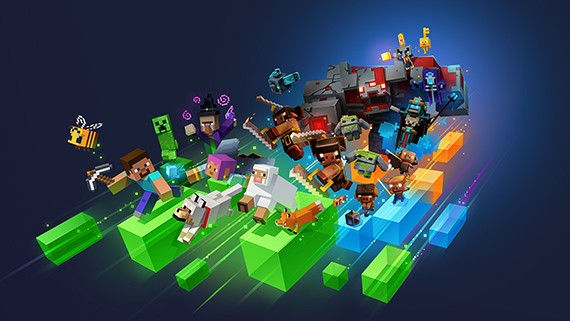
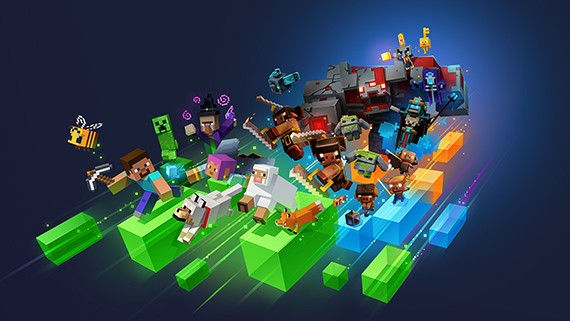

Introduccion a Minecraft
Desde su lanzamiento en 2011, Minecraft se ha consolidado como uno de los videojuegos más influyentes y populares de la historia. Creado por Markus Persson, conocido como "Notch", y desarrollado posteriormente por Mojang Studios, Minecraft es un juego de construcción y aventura que permite a los jugadores explorar un mundo virtual generado de manera procedimental, lleno de bloques y recursos por descubrir. A lo largo de los años, este juego ha evolucionado, expandiéndose en diversas direcciones y capturando la imaginación de millones de jugadores en todo el mundo.
Un mundo de bloques
La esencia de Minecraft radica en su entorno pixelado y sus gráficos de estilo retro, que, lejos de ser una limitación, han contribuido a su atractivo. En el juego, el mundo se compone de bloques de diferentes tipos, cada uno con características y usos específicos. Desde tierra y piedra hasta madera, hierro y diamante, los jugadores pueden recolectar, construir y crear prácticamente cualquier cosa que deseen. Esta simplicidad en la estética permite que la creatividad del jugador brille, invitando a construir desde simples casas hasta impresionantes castillos, ciudades enteras o incluso máquinas complejas.El mundo de Minecraft no solo es vasto y variado, sino que también está lleno de biomas que ofrecen diferentes recursos y desafíos. Desde densos bosques y desiertos áridos hasta montañas nevadas y océanos profundos, cada bioma proporciona un entorno único que influye en la jugabilidad y la estrategia del jugador. Además, el ciclo día-noche y los diferentes tipos de clima aportan una dimensión dinámica al mundo, que hace que cada partida sea una experiencia única.
Modos de juego
Minecraft ofrece varios modos de juego que se adaptan a diferentes estilos de juego. El modo Supervivencia es donde la mayoría de los jugadores comienzan su aventura. En este modo, deben recolectar recursos, gestionar su salud y hambre, y enfrentarse a criaturas hostiles que emergen por la noche. La supervivencia requiere planificación y estrategia, ya que los jugadores deben construir refugios y recolectar recursos para sobrevivir.Por otro lado, el modo Creativo brinda a los jugadores la libertad total para construir sin límites. En este modo, los jugadores disponen de acceso ilimitado a todos los bloques y objetos del juego, lo que les permite construir estructuras impresionantes sin preocuparse por la supervivencia. Este modo es ideal para aquellos que desean expresar su creatividad sin las restricciones del modo Supervivencia.Además, existe el modo Aventura, diseñado para jugadores que quieren experimentar mapas y escenarios creados por otros. En este modo, las reglas del juego pueden ser modificadas por los creadores de mapas, lo que permite una jugabilidad única y diversa, enfocándose en la narrativa y los desafíos específicos.
Comunidad y cultura
Una de las claves del éxito de Minecraft es su vibrante comunidad. Desde su inicio, los jugadores han compartido sus creaciones y experiencias a través de plataformas como YouTube, Twitch y redes sociales. La cultura de Minecraft está llena de tutoriales, series de juegos, y videos de "let's play" que han inspirado a nuevos jugadores y han fomentado una comunidad creativa.Además, Minecraft ha generado una extensa variedad de modificaciones (mods) y paquetes de recursos que permiten a los jugadores personalizar su experiencia. Estos mods pueden agregar nuevos bloques, criaturas, herramientas y mecánicas de juego, enriqueciendo aún más la jugabilidad y fomentando la innovación dentro del juego. La comunidad de modding ha crecido enormemente, y muchos de estos mods han dado lugar a nuevas formas de jugar que han ampliado los límites del juego original.
¿Que trae de nuevo la version 1.21 de Minecraft Bedrock?
Crafter: al fin tenemos crafteos automáticos
La primera novedad que presento de esta nueva versión, la 1.21, es un nuevo bloque interactuable similar a una mesa de crafteo. En este caso es un bloque donde le insertarás una receta de fabricación y si le das los ítems necesarios para dicho crafteo, pues lo crafteará. Una idea muy interesante sobre todo para crear mecanismos y crear por ejemplo pan al tenerlo conectado a una granja de trigo. Como vemos en el propio directo de Mojang, vemos como es posible que crafteen una armadura y que al pasar por una puerta, te equipes automáticamente sin necesidad de equiparte tu propia armadura. De hecho creas una nueva y no gastas la que quieres usar para cosas más arriesgadas. Una mecánica muy muy interesante pero esto no es lo único ya que si os ha gustado esto para hacer mecanismos o explorar la siguiente novedad os encantará.
El Breezer: ¿Un mob cuyos proyectiles interactúan con redstone?
A voz de pronto parece un blaze, y no nos equivocamos cuando lo pensamos. Lo que pasa con este mob es que en vez de volar, brinca de un lado a otro como si fuera un slime. Además lanza un proyectil que puede interactuar con bloques que pueden ser activados con redstone, por ejemplo una lampara, puertas o trampillas. E incluso puede activar dispensadores, claramente un mob con una mecánica bastante peculiar y que puede dar mucha vidilla a aquellos jugadores que les guste el técnico.
Nuevos bloques de decoración: ¿Por fin un buen uso para el cobre y la toba?
Una de las novedades que más me han gustado de la Minecraft Live 2023 es la adición de dos tipos de bloques decorativos, por una parte el cobre que podemos ver en la foto. Ahora podemos hacer lámparas con cobre que le dan un toque bastante industrial o de temática de ingeniería. Aunque no es lo único, también añadirán unos bloques como si fueran rendijas de pasillos de fábrica que francamente me gusta mucho. Pero no es el único bloque que obtendrá nuevos usos.El otro bloque que recibirá nuevos usos es la anteriormente inútil toba. Aquel bloque que encontrábamos y que no nos llamaba para nada ya que era bastante tosco y feo. Además que antes era totalmente inútil y no tenía ningún uso decorativo. Pues tanto en la anterior foto como en la de abajo podemos apreciar esos nuevos usos decorativos a la toba. En mi opinión se ve bastante bonita y junto a el nuevo uso del cobre y el crafter, son las novedades de minecraft 1.21 que más me gustan.
Galería de Imágenes

 

Seccion de Desacarga
Ojala disfrutes la aplicacion!
Comentarios
Hombre muchas gracias,en serio pense que traia virus jaja
Al fin la put*****e,muchas gracias tio